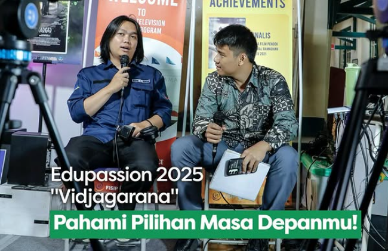
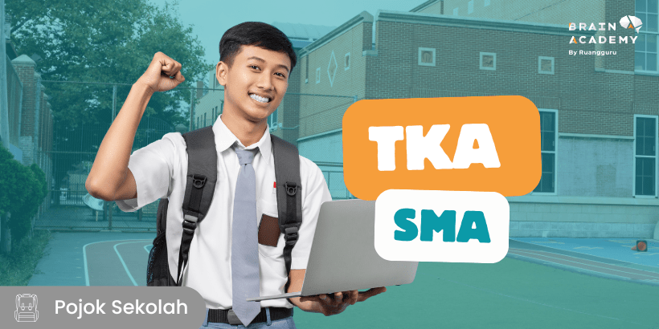
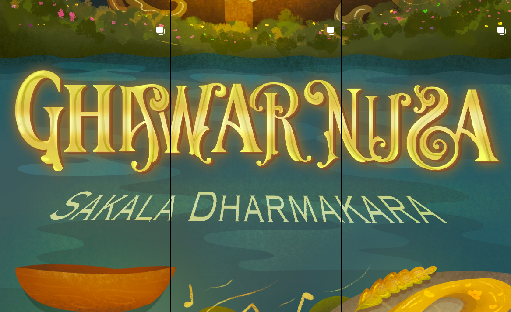
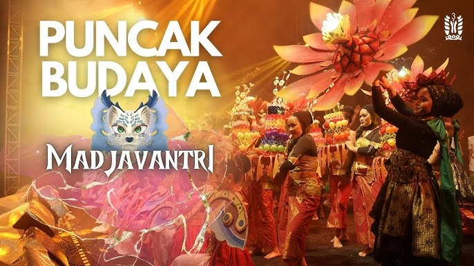
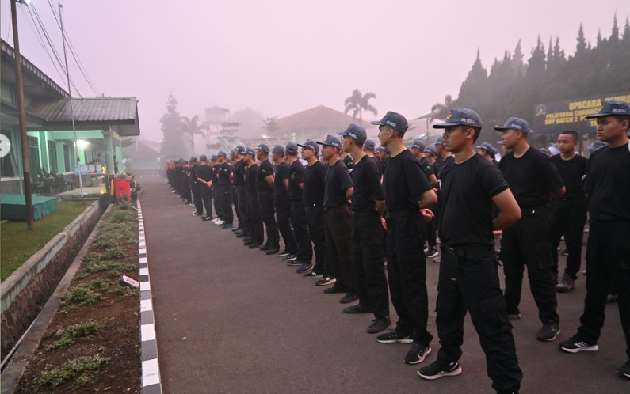

Portal Siswa SMAN 3 Bandung
Beranda
Berita
Profil
Sejarah Sekolah
Visi dan Misi
Guru dan Staff
Kontak
Kegiatan Yang Akan Berlangsung

Edupassion 2025

TKA kelas XII

Fesbud 2025
Kegiatan Yang Telah Berlangsung

Festival Budaya Madjavantri
Hari Batik Nasional

LDKS
×